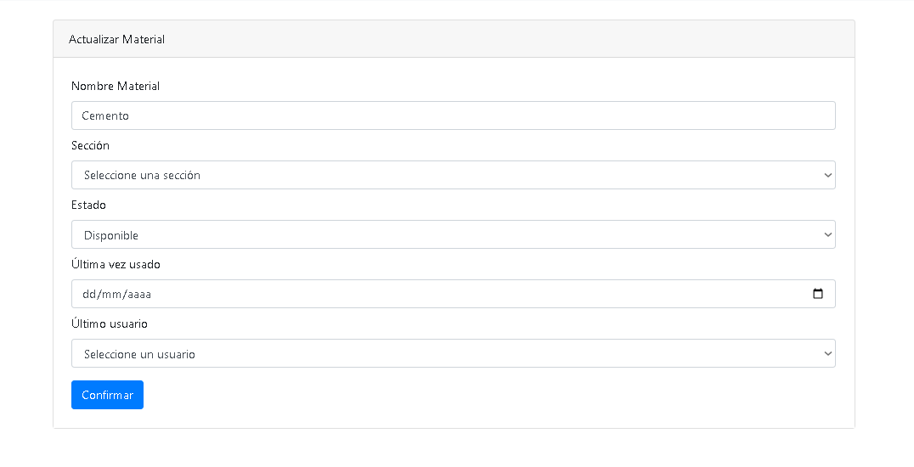
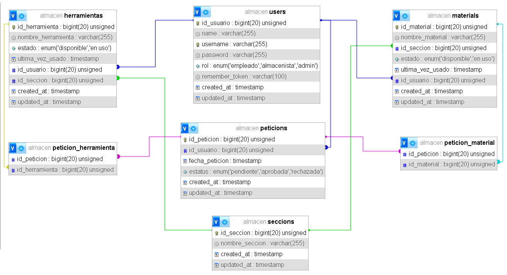
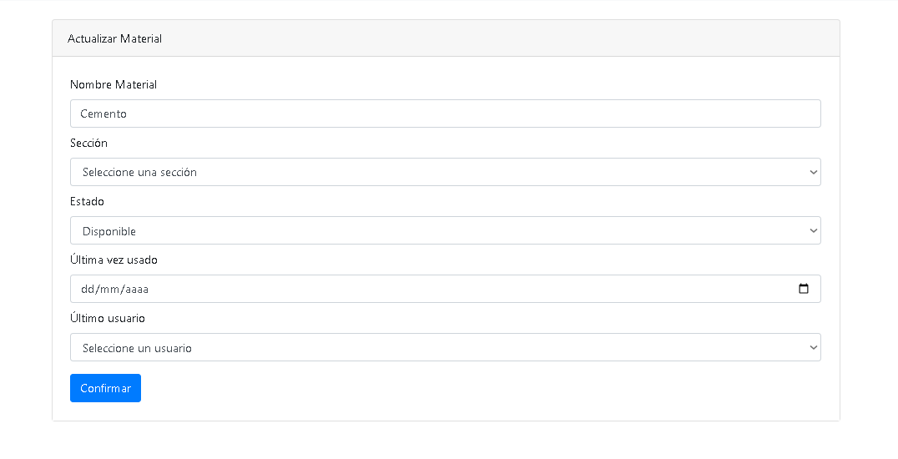
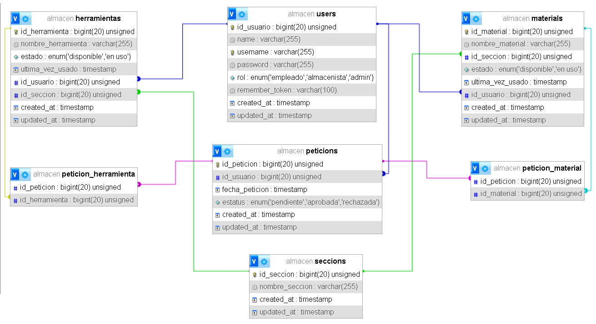
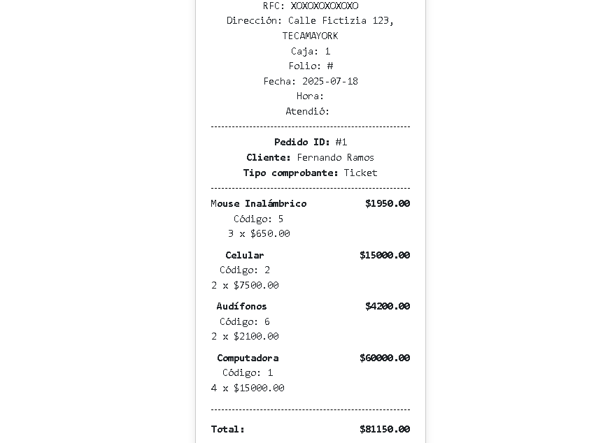
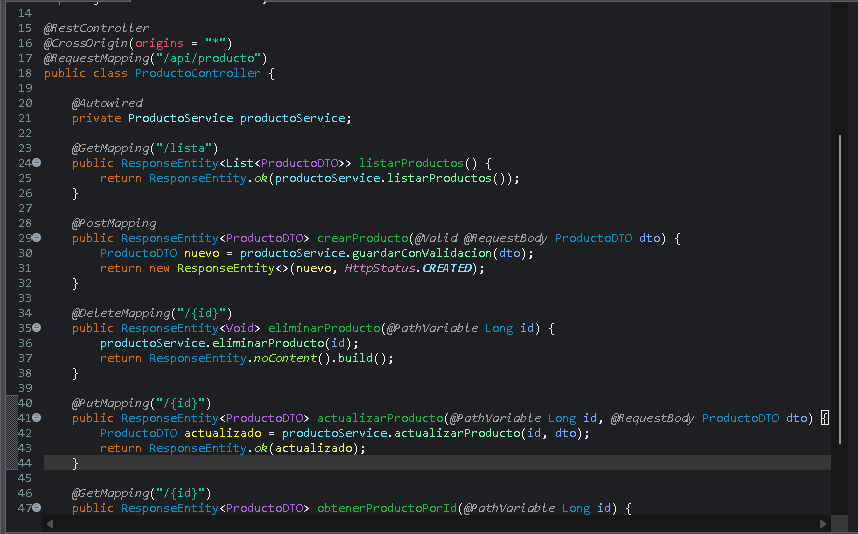
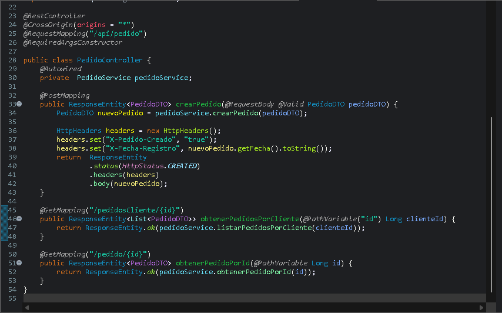
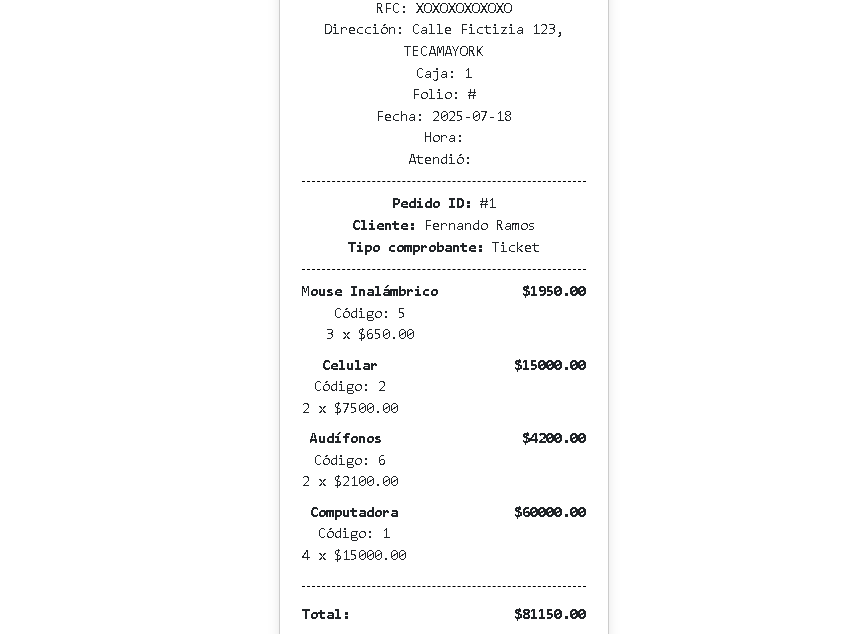
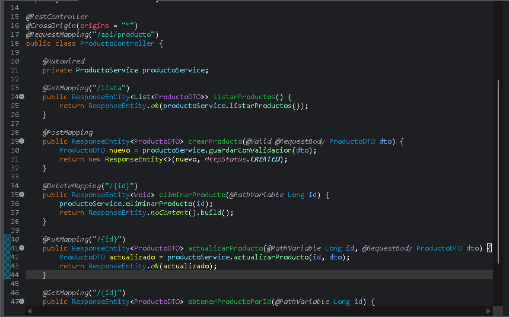
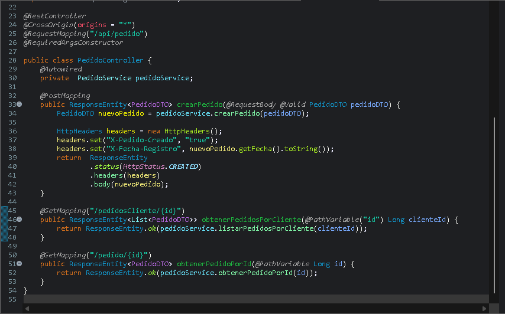

Plataforma ecommerce con tematica de dulces tradicionales y exoticos, construida con Java y Spring Boot para administrar productos, categorías, pedidos y usuarios. Incluye un sistema de autenticación, panel administrativo para CRUD de productos, carrito de compras, control de stock y procesamiento de pedidos. La arquitectura está basada en MVC con un enfoque RESTful, integrando MySQL para persistencia de datos y Bootstrap en el frontend para una experiencia visual moderna y accesible.
- HTML
- CSS
- JavaScript
- Java
- Spring Boot
- MySQL
- Bootstrap
- Git
Estado: Funcional
 



 




